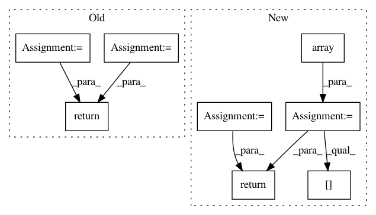

0110937ab04f4298f98963bed1de08962d776b24,src/fonduer/utils/data_model_utils/structural.py,,lowest_common_ancestor_depth,#,187
Before Change
:param c: The binary-Mention Candidate to evaluate
span1 = _to_span(c[0])
span2 = _to_span(c[1])
ancestor1 = np.array(span1.sentence.xpath.split("/"))
ancestor2 = np.array(span2.sentence.xpath.split("/"))
min_len = min(ancestor1.size, ancestor2.size)
return min_len - np.argmin(ancestor1[:min_len] == ancestor2[:min_len])
After Change
spans = [_to_span(i) for i in c]
ancestors = [np.array(span.sentence.xpath.split("/")) for span in spans]
min_len = min([a.size for a in ancestors])
arrays = np.array([a[:min_len] for a in ancestors])
arg_min = np.argmin(arrays[:-1] == arrays[1:], axis=1)
val = np.min(arg_min[np.nonzero(arg_min)])
return min_len - val
In pattern: SUPERPATTERN
Frequency: 3
Non-data size: 8
Instances
Project Name: HazyResearch/fonduer
Commit Name: 0110937ab04f4298f98963bed1de08962d776b24
Time: 2020-07-01
Author: wajdikhattel@think-it.io
File Name: src/fonduer/utils/data_model_utils/structural.py
Class Name:
Method Name: lowest_common_ancestor_depth
Project Name: CamDavidsonPilon/lifelines
Commit Name: b46c893e2c0f9cd505b597c2ff215a0df04b6050
Time: 2020-05-19
Author: cam.davidson.pilon@gmail.com
File Name: lifelines/fitters/npmle.py
Class Name:
Method Name: log_likelihood
Project Name: havakv/pycox
Commit Name: ec96fef3e7788d8da50ac8ca80d20c259e11efc7
Time: 2019-05-02
Author: haavard.kvamme@gmail..com
File Name: pycox/metrics.py
Class Name:
Method Name: concordance_td